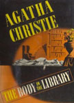
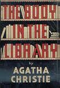
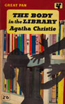
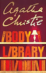
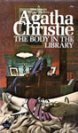
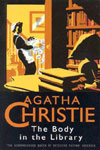
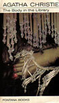
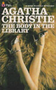

An unusual feature of The Body in the Library is that it has almost as many detectives as it has suspects. Although Jane Marple is the most famous character in the novel, and the person who ultimately solves the mystery, she does not fully enter the action until the half-way point of the novel. Even then she is not always the driving force of the investigation. The police are represented by Colonel Melchett and Inspector Slack of the Radfordshire force, and Superintendent Harper of Glenshire. In addition, a second "amateur detective", the retired head of Scotland Yard, Sir Henry Clithering, gets involved at the request of Conway Jefferson. Melchett, Harper and Sir Henry all play significant roles in advancing the investigation and, through them, the reader often has access to significant information before Miss Marple. In addition, Adelaide Jefferson's son, Peter Carmody, plays at being a detective and inadvertently provides a unique source of information.
In Agatha Christie's Cards on the Table, published six years earlier, Anne Meredith knows Ariadne Oliver as the writer of a book called The Body in the Library.








Screen Versions
The 1984 television adaptation was part of the BBC series of Miss Marple, with Joan Hickson making the first of her acclaimed appearances in the role of Jane Marple. The adaptation was transmitted in three parts between 26–28 December 1984, and only had a few changes made to it: the character of Superintendent Harper was omitted; Bartlett's car was changed from a Minoan 14 to a Vauxhall Coaster and the amount of money left to Ruby was changed from £50,000 to £100,000.
A second adaptation of the novel was made in 2004 by ITV, as part of their Marple series. While this adaptation was largely faithful to the original novel, there were several changes including the identity of the murderer and adding a lesbian relationship that wasn't in the original novel.